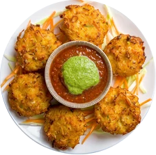
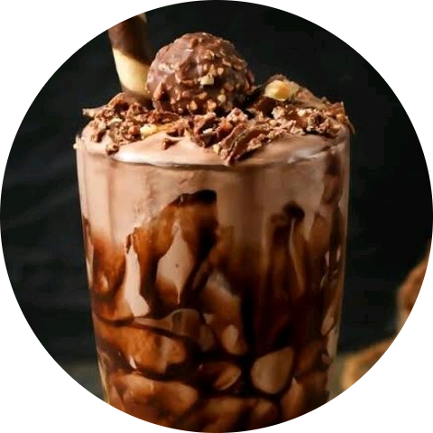
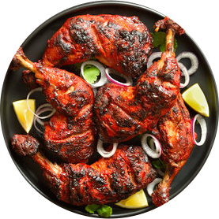

Our Menu
Step into a world where every dish tells a story of quality and passion. Our menu is a carefully curated journey through artisan starters, legendary charcoal grills, and our iconic desserts. At Dora Family Restaurant, we bridge the gap between traditional spices and modern culinary art.




From the first bite to the final lingering sweetness, our offerings are designed to delight. We invite you to explore our diverse categories, where every ingredient is hand-selected and every meal is a testament to our craft.
Find Your New Favorite Flavor!